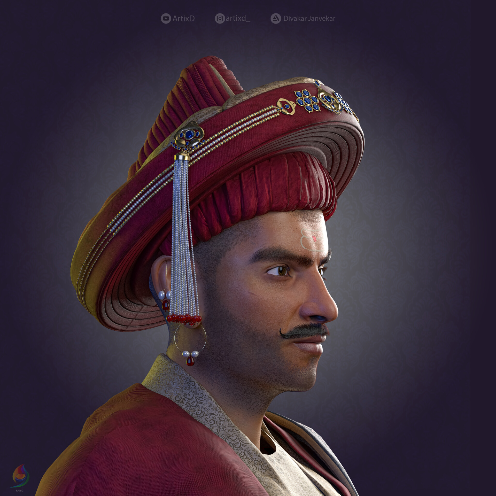
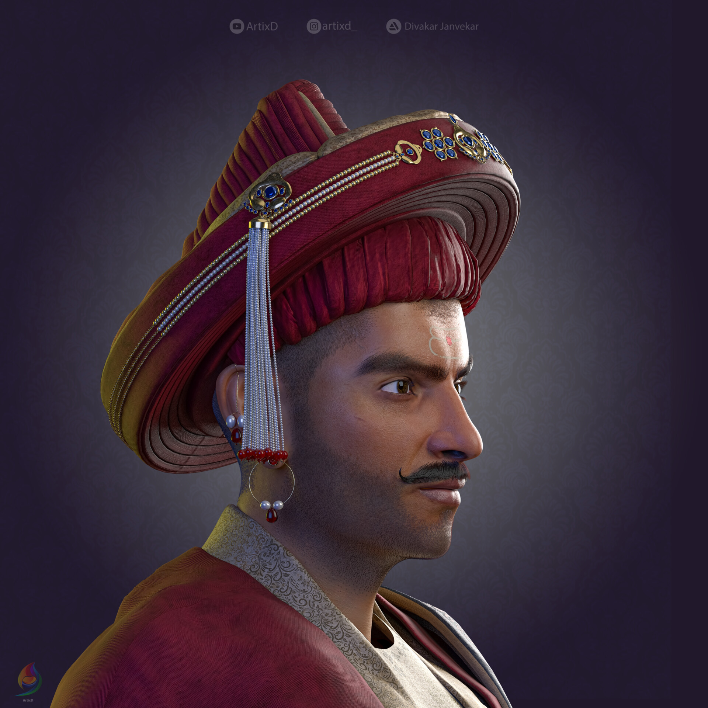

Learn about Peshwa Bajirao, an epic Indian warrior who fought against
Mughuls in the 1700s
The person I chose for the autobiographical website is Peshwa Bajirao. He was an
Indian fighter and Prime Minister that fought against the Mughals in the 1700s. He drew
inspiration from Chatrapati Shivaji, a decorated warrior who fought for India's independence.
History of the Marathas
17th century politics were dominated by several Islamic kingdoms, with the Mughal Empire controlling most of North India.
→ Chatrapati Shivaji Maharaj awoke a movement against the Mughal Empire. He had two objectives to do this: Respect and Freedom. He started gathering people and revolting against the Mughals and it started to look like they might just attain the independence they dreamed of. However, with his death in 1680, the Mughals started influencing their power and they regained control of places that Shivaji had freed. It looked like Shivaji's dream of independence was going to remain a dream.

Baji's Early Years
→ He was born on August 18, 1700 in a Brahmin Marathi family
→ He was the son of Balaji Vishwanath Bhatt and Radhabai.
→ He was the eldest son and he had a younger brother, Chimaji and a younger sister, Bhiubai
→ Baji's father was the first Peshwa of King Shahu
My knowledge: → When he was born, he was taken to a priest, who told his family that he wasn't going to have a long life. However, this was the same priest who told his parents that he would create the destiny of the Martha Empire. He would bring independence to the Marathis and free them from the control of the Mughals. His parents were determined to make the greatest warrior anyone had ever seen.
→ He didn't like going to school. He didn't like his teacher or the education system. Whenever he could, he would challenge his teacher's ideals on what should be taught in class while his younger brother was an ideal student who always had his head in the books.
→ He would jump off waterfalls, catch a snake with his bare hands, and stand up to any Mughals who would mistreat Marathis.
→ He would frequently encounter Nazir, a Mughal who would terrorize the people of his town, Saswad.
→ One day, Baji's mother took him out of school and decided to teach him so he could become a great warrior and free India from the terrorization of the Mughals.

Baji's Later Years
On April 17, 1720, Shahu nominated Bajirao as Peshwa (Prime Minister), succeeding his father. His bravery and determination led to his victory even though many people were jealous of his abilities at such a young age. Bajirao's plan as the new Peshwa was to aggressively expand into North India.
He quoted the following: “Let us strike at the trunk of the withering tree and the branches will fall off themselves. Listen but to my counsel and I shall plant the Maratha flag on the walls of Attock”.
Battles: He never lost a battle.
Malwa (1723)
Dhar (1724)
Aurangabad (1724)
Battle of Palkhed (1728)
Firozabad (1737)
Delhi (1737)
Bhopal (1738)
Battle of Vasai (1739)
were only some of the major battles won by Bajirao.
Death: Baji Rao's body was worn out from endless wars and military campaigns. He caught a virulent fever and died on April 28, 1740.
 

Baji's Contribution To India
A famous English historian Sir Richard Carnac Temple wrote, “He died as he lived, in camp under canvas among his men, and he is remembered to this day among the Marathas as the fighting Peshwa and the incarnation of Hindu energy.” When Bajirao took over as Peshwa, Maratha territorial limits were confined to tracts in Western India.
At his death after twenty years in A.D 1740, the Marathas had conquered a large part of Western and Central India and were dominating the South of India up to the peninsula. Though Bajirao died unable to plant the Maratha flag on the Himalayas as promised, his son Raghunath Rao in A.D.1757 planted the Saffron flag on the fort of Attock and across the Indus river.